坚持长期主义
聚焦品牌资产的长线价值，沉淀持续为品牌赋能的市场策略，而非短期收割。
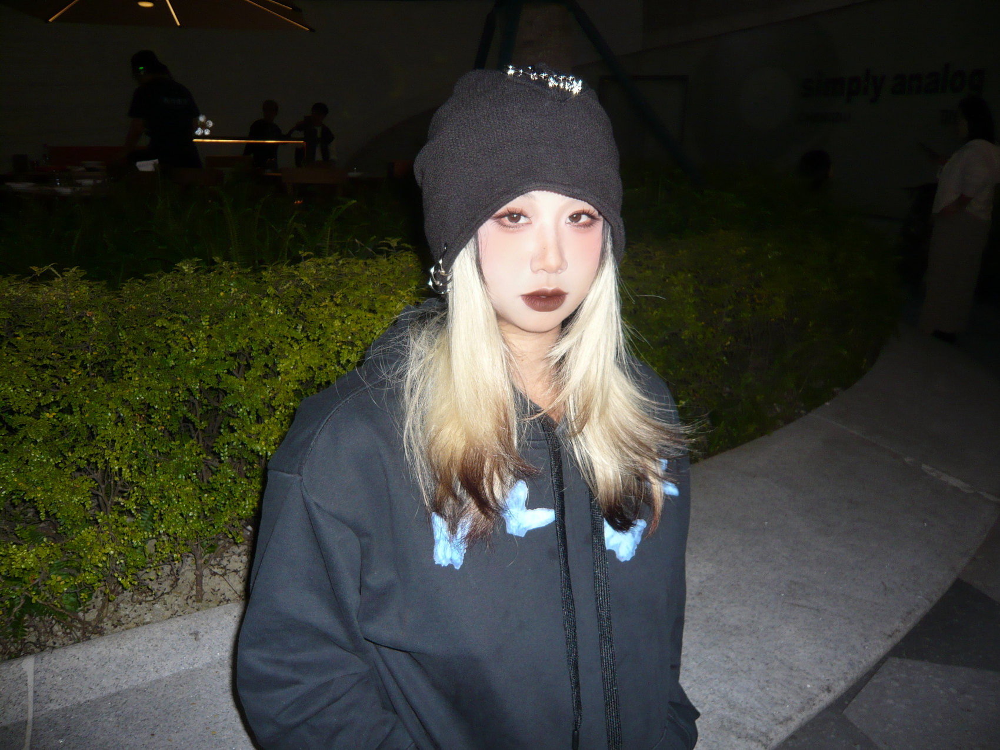
品牌方 & 代理商内容增长与投放经验，有跨境保健、计生类等类目的实操经验。
能力范围包括但不限于品牌明星合作、全渠道市场内容策略、达人投放执行及复盘、团队建设等。
操刀 500W+ 营销预算项目，从目标用户需求出发，赋能品牌电商成交。
聚焦品牌资产的长线价值，沉淀持续为品牌赋能的市场策略，而非短期收割。
主动深入业务，了解用户、洞悉市场；持续探索 AI Agent 等新技术与新趋势，拓宽个人和团队的边界。
把产品的市场化表现转化为可持续积累的品牌资产。
以数据分析和信息检索为基础，结合商业逻辑与用户心理，建立适配业务的营销策略。
主动复盘、提出解决方案，以 Ownership 推动事情发生，而非被动等待安排。
把同事视为共同达成目标的伙伴，给予试错与成长空间，主动协助解决问题，实现团队共赢。
品牌PR负责人 · 64k cellssense · 已离职
主导郭品超品牌大使项目、抖音及小红书品牌投放、巨量云图探索与内部培训；核心主导抖音自播内容视觉及 AI 账号矩阵孵化。
营销经理 · 粉打 PinkPunch
统筹女性情趣品牌线上线下传播、参展策划与社群合作；策划 2024 年成人保健产业博览会参展及跨品牌联合活动。
市场营销主管 · UNOMI 由里健康
负责年度品牌传播、媒介与 PR 统筹、预算分配及团队建设，衔接内容投放与电商目标。
市场营销策划 · UNOMI 由里健康
以小红书达人投放为核心，推进胶原蛋白肽、盔甲益生菌新品推广及全年 Campaign。
高级媒介
服务快消、美妆、个护等 KA 客户，负责小红书达人媒介规划与项目执行。
品牌首位品牌大使合作 · 直接主导全链路
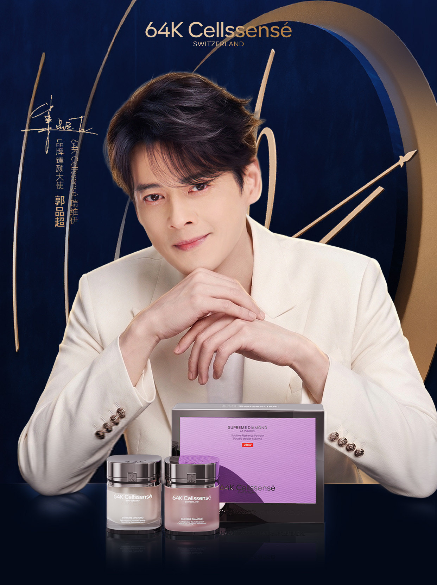
极光饮上市在即，品牌计划通过线下活动为直播达人积累内容素材。首位品牌大使要定调品牌形象，还要在预算内支持后续多渠道传播。
以保养状态与肤质形象、公众认知度、抖音粉丝黏性、团队配合度及线上素材适配性为维度，建立 100+ 候选人池；合作预算上限控制在 80 万元以内。
综合外形气质、社交平台讨论度、预算适配与线下执行可行性，确定郭品超。本人直接主导候选筛选、商务谈判、合作方案、活动统筹及后续明星素材规划。
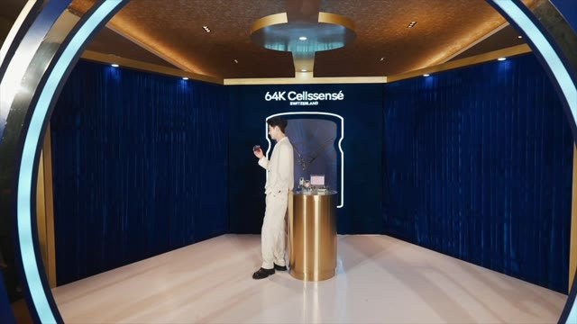
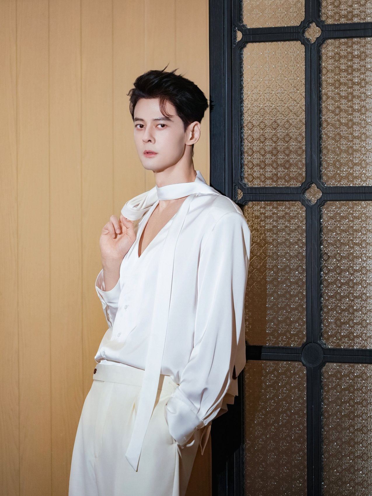
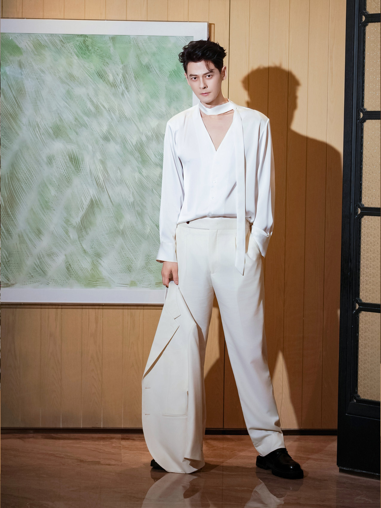
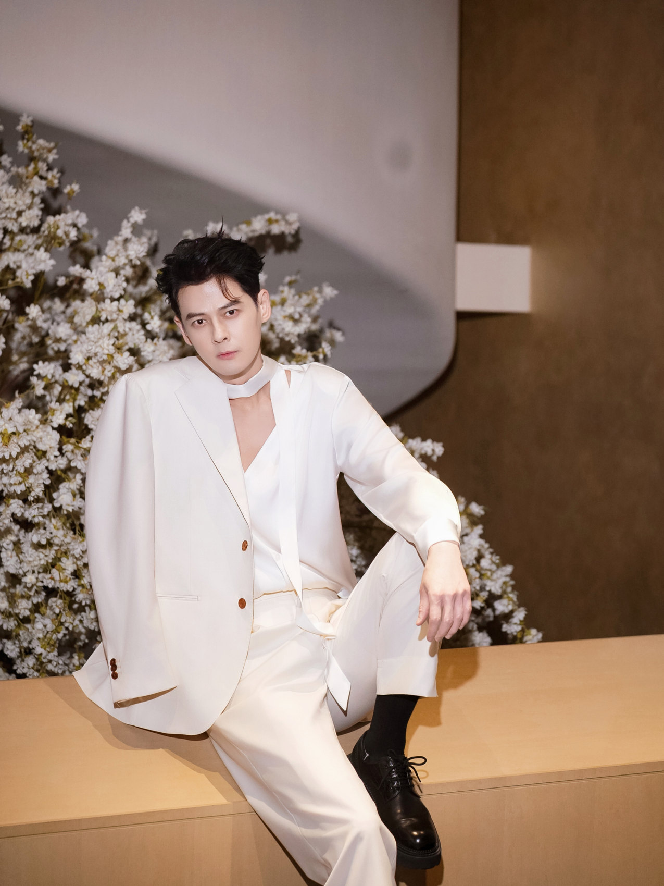
从前期筹备到现场执行，记录品牌大使项目的真实落地。视频为团队协作成果，本人主导项目统筹。
仅展示公开活动画面；视频版权归相关权利方所有。
独立操刀抖音短视频带货项目：从达人筛选、合作方式判断、脚本与素材审核，到发布排期和投后复盘，连接品牌表达与转化目标。
核心主导自播话术、投流脚本及直播间内容视觉体系，从 0 到 1 建立协作框架；项目整体 ROI ＞3。
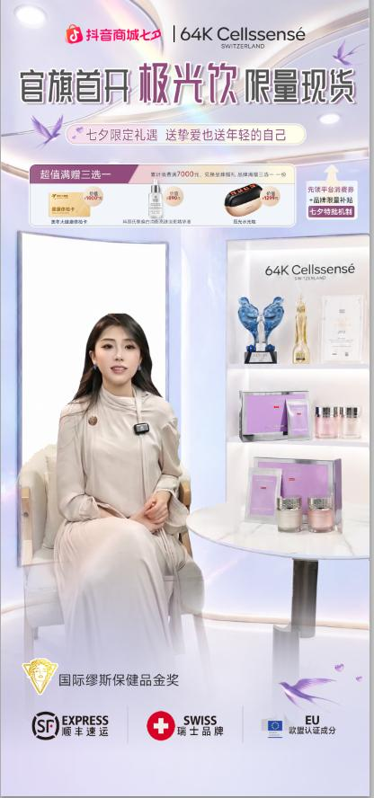
负责小红书与 Instagram 的国内外自孵化账号布局，主导定位、选题、审核与复盘，统筹实习生执行。
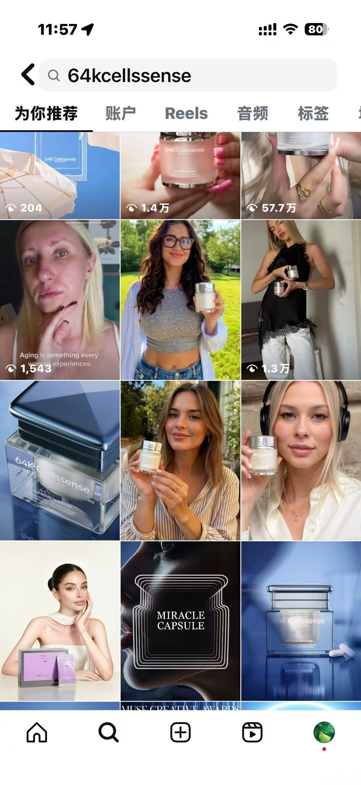
小红书账号与笔记截图；内部“爆文”口径为互动过千。
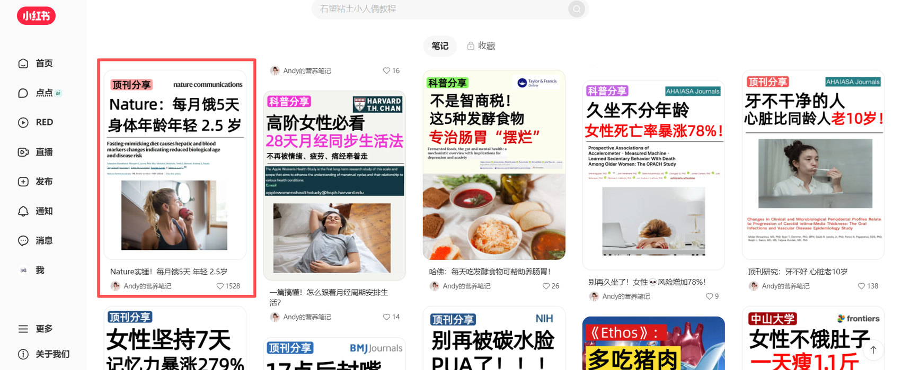
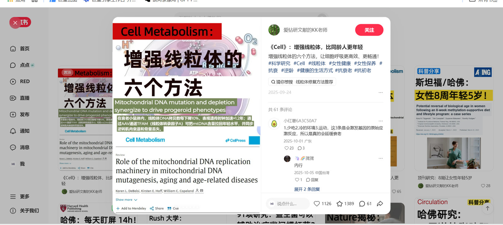
在粉打 PinkPunch 担任营销经理期间，负责女性情趣玩具品牌的线上线下传播。策划 2024 年成人保健产业博览会参展，联动女性设计品牌与社群，打通展陈、内容与现场体验。
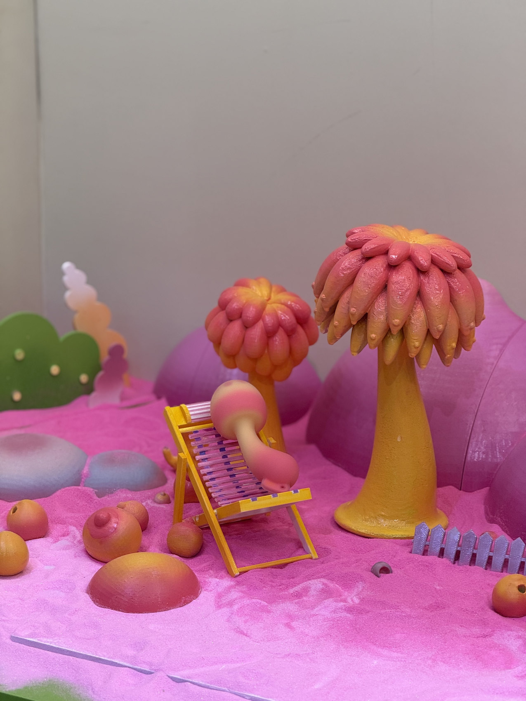
品牌展陈影像资料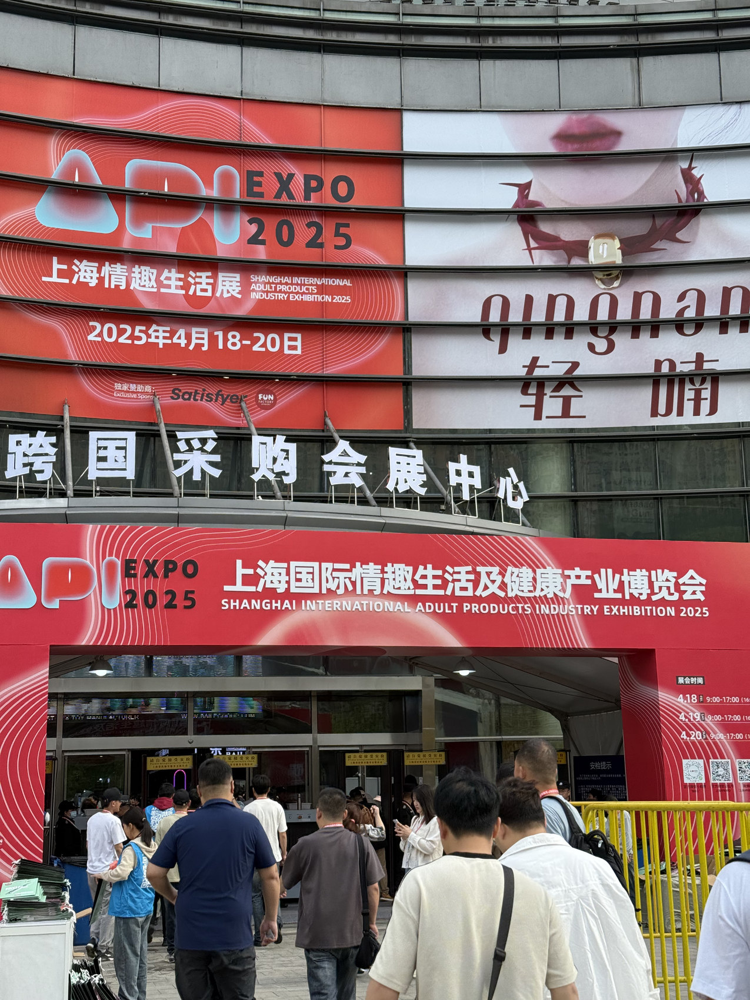
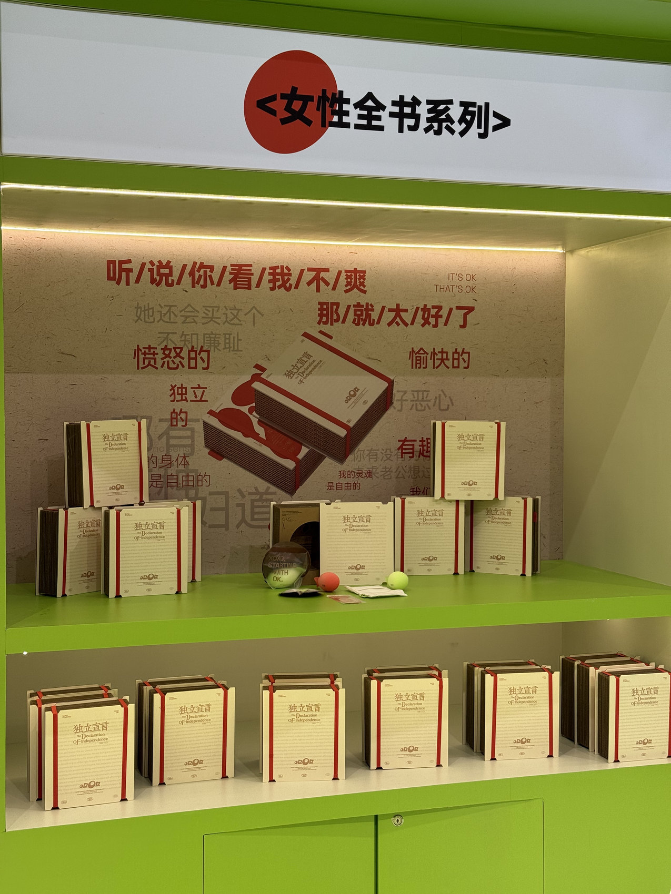
围绕女性用户的身体议题与产品使用场景设计沟通方式；并与本地女性社群、女性友好空间等合作，拓展品牌线下触点。
图片为粉打品牌展陈影像资料；任职期间项目经历以工作履历为准。产品视觉与品牌权益归 PinkPunch 所有。
查看 PinkPunch 官网场景化产品视觉 ↗在 UNOMI 从市场营销策划到市场营销主管，围绕胶原蛋白肽、盔甲益生菌与热燃片等产品，独立推进达人筛选、合作沟通、媒介价格把控、内容审核、投后跟踪和复盘。
以小红书为主阵地，操刀全年 500W+ 营销预算，测试不同类型 KOL 的种草和带货能力，为新品推广与电商成交提供内容支持。
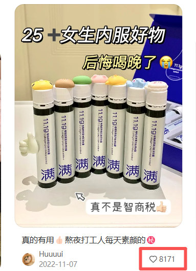
胶原蛋白肽 · 8,171 赞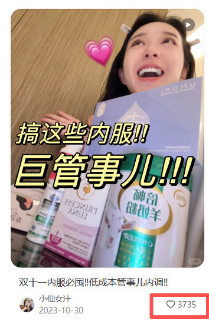
盔甲益生菌 · 3,735 赞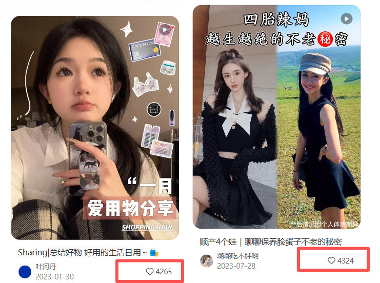
热燃片 · 两篇笔记均超 4,000 赞以下 7 张为我主导内容选题和产品种草话术、与达人共创并投放的笔记截图。
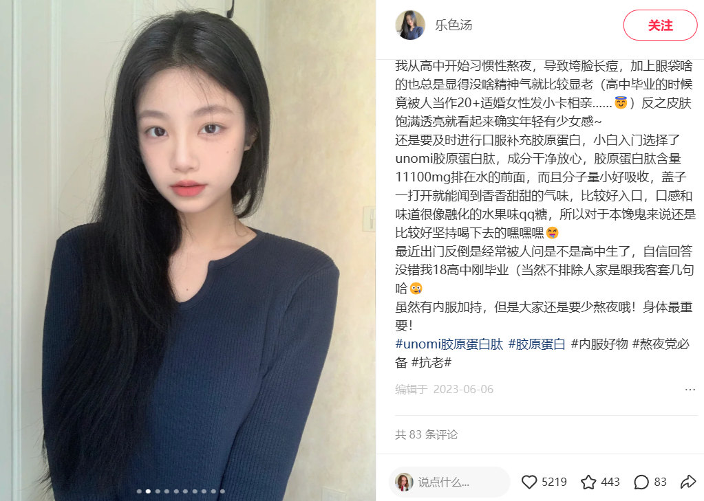
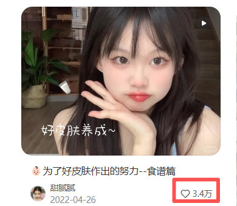
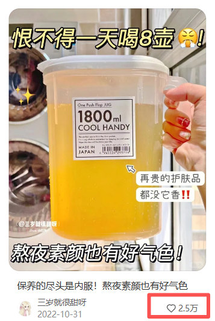
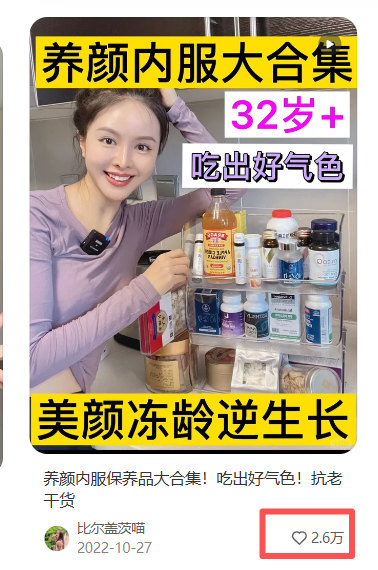
北京辰木互动科技有限公司 · 高级媒介 · 2020.07—2021.10
在代理商侧服务护肤、彩妆、食品饮料、母婴与医疗保健等领域的品牌客户。独立推进小红书传播策略、达人媒介规划与资源推荐，统筹价格沟通、内容审核、项目执行及效果追踪。
围绕客户目标匹配达人与内容形式，推动投放复盘和后续合作；在多品牌、多项目并行中积累跨品类媒介经验。
部分服务品牌 · 字标呈现用于个人履历展示
跨护肤、营养食品与母婴等类目服务经验。以下为品牌公开产品视觉，用于展示服务品类，非本人设计或投放作品。
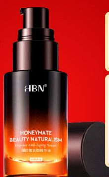
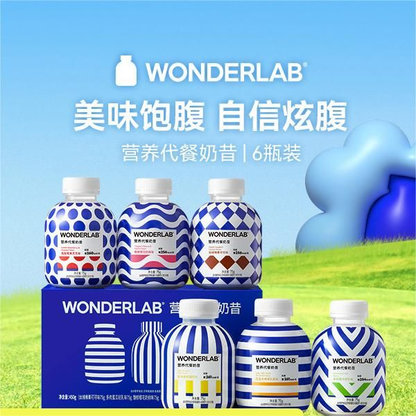
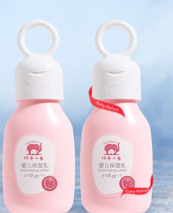